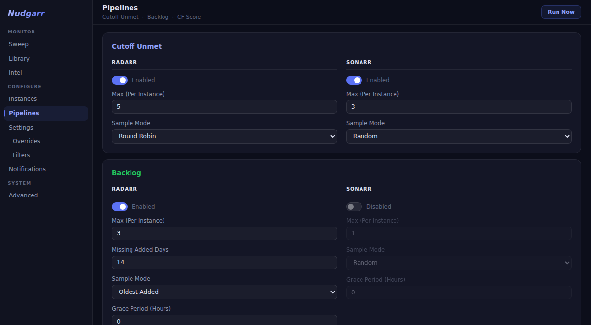
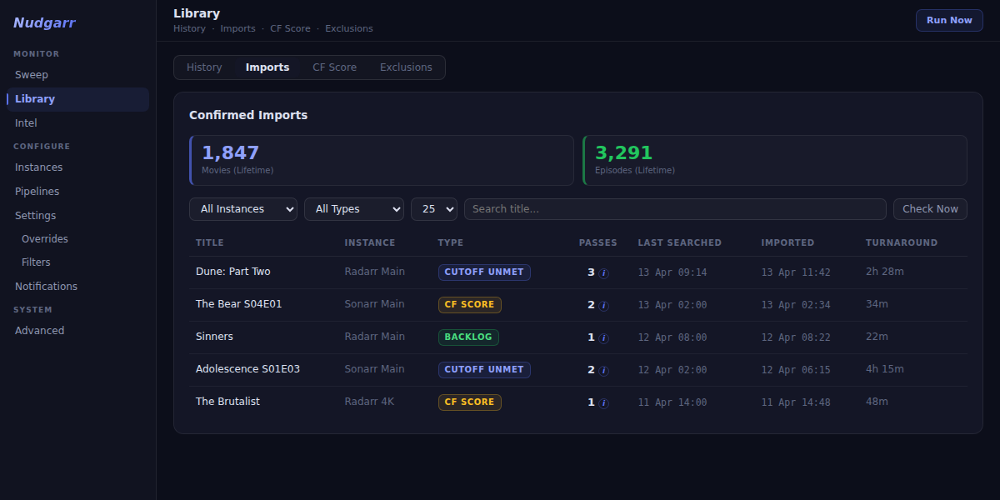
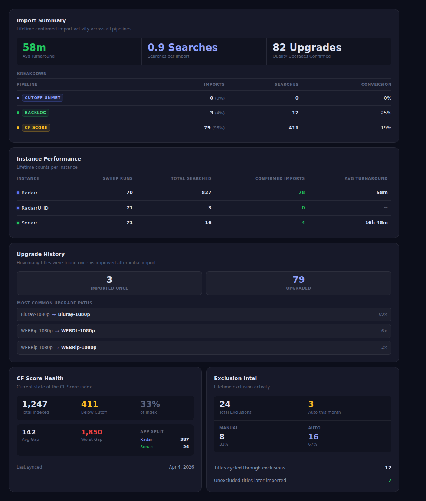
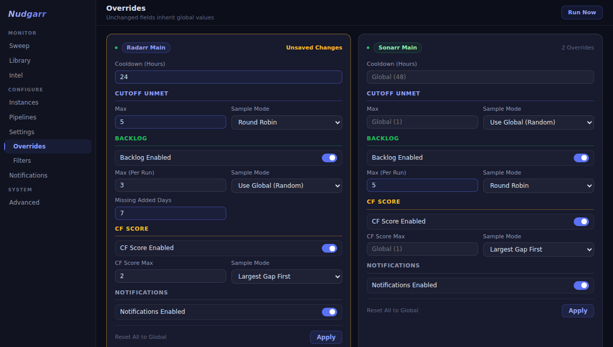

Nudgarr
Three search pipelines. One container. Radarr and Sonarr, fully automated.
Cutoff Unmet · Backlog · CF Score · Self-hosted · No telemetry
Three pipelines. One scheduler.
Cutoff Unmet upgrades what you have. Backlog fills in what is missing. CF Score refines what is already good.
When a title has been searched N times with no import, Nudgarr stops wasting slots on it and excludes it automatically. Four conditions must all pass, including a live queue check, so nothing gets excluded while it's still downloading. Configure an unexclude window and Nudgarr puts it back in rotation after that many days.
Every confirmed import records the quality it went from and the quality it landed at. The Imports tab shows the full upgrade path per title across multiple import cycles, showing exactly what improved and when.
Finds monitored files where the custom format score is below the quality profile cutoff and tells the Arr to search for a better-scored release. Handles a different problem than Cutoff Unmet: you already have the right quality tier, but the release does not score well against your custom format rules.
A lifetime performance dashboard built from hard facts in your database. Five focused cards: Import Summary (turnaround, searches per import, pipeline breakdown), Instance Performance, Upgrade History, CF Score Health, and Exclusion Intel. No scoring, no assumptions — just straight facts derived from what Nudgarr has actually done.
Suppress scheduled sweeps during a configurable time window with day-of-week selection. Overnight ranges are supported. Manual Run Now is never affected. Suppression only applies to cron-triggered sweeps.
Override cooldown, batch cap, sample mode, backlog toggle, and notifications independently per instance. Sparse storage: only fields you've changed are saved. Fields left blank inherit the global value automatically.
Exclude items from search by Radarr tag or quality profile. Applied per instance before every sweep, to both the Cutoff Unmet and Backlog pipelines. Filtered items never consume a search slot.
Searches missing movies and episodes that have never been grabbed. Independent sample mode settings from Cutoff Unmet. Radarr gets an age filter: only items added more than N days ago are eligible, keeping new additions out of the queue until they've had time to appear on indexers.
Radarr items that haven't met their Minimum Availability threshold are skipped entirely, even if they appear in the Cutoff Unmet list. No wasted searches on movies that aren't out yet.
Per-item cooldowns, configurable batch sizes, sleep timers, and jitter keep your indexers healthy. Items already in the download queue are detected and skipped so they never consume a search slot.
Send sweep summaries and auto-exclusion alerts to 80+ services (Discord, Slack, Telegram, Pushover, ntfy, and more) via a single Apprise URL. Notifications are configurable per instance.
One container alongside your existing *arr stack. SQLite database, Waitress WSGI server, no external dependencies. Self-hosted and private by design. Zero outbound connections outside your own instances.
See it in action
A dark, purpose-built UI. Desktop and mobile.




Why Nudgarr?
Radarr and Sonarr find new releases via RSS. They don't go back and search for quality upgrades on content already in your library, and their built-in "Search All Missing" fires everything at once, hammering your indexers in a single burst.
Nudgarr works differently. It searches in small batches on a cooldown, so your indexers stay healthy. It tracks every search it triggers and watches for imports. When something comes in, it records the quality before and after. When a title has been searched too many times with no result, it stops automatically and moves on.
Everything is configurable per instance. One Radarr for movies, one for 4K, a Sonarr for TV and one for anime. Each can have its own cooldown, cap, and backlog settings without touching the others. It runs as a single Docker container with no external dependencies, and it never phones home.